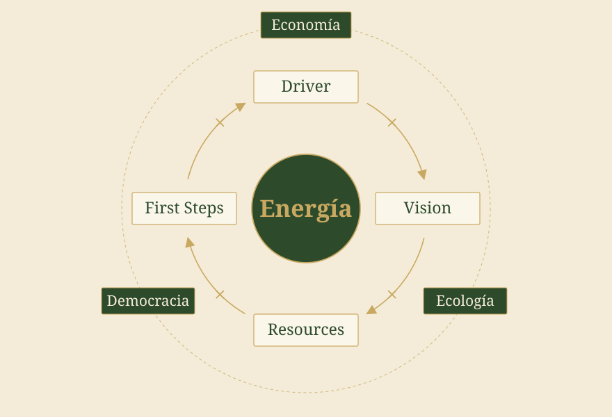
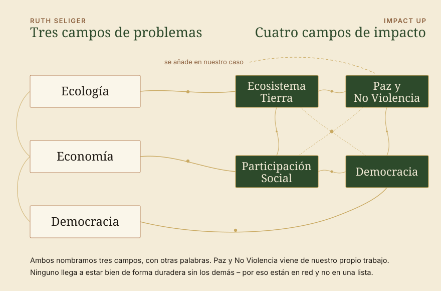
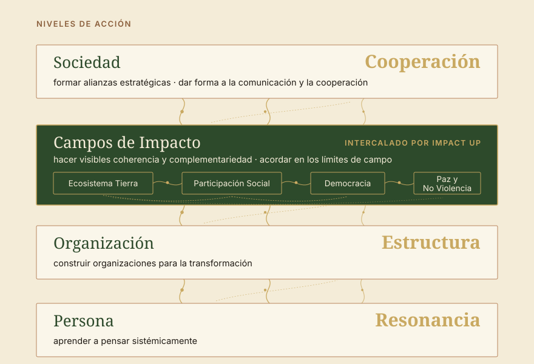

Impulso · Cómo llegamos a ser realmente eficaces
El libro Systemische Beratung der Gesellschaft. Strategien für die Transformation de Ruth Seliger nos ha inspirado. Ruth Seliger viene del desarrollo organizacional sistémico y quiere mejorar la sociedad. Ese es un enfoque importante de nuestro instituto: allí donde se quiere lograr impacto, también debe mejorarse la sociedad. Y al igual que Seliger, queremos trabajar sistémicamente con la sociedad. Un chequeo de cómo encajan las ideas de Seliger con las nuestras: el enfoque sistémico de la consultoría de Impact Up puesto a prueba.

Cómo está construido el libro
Primero la mirada, después el proceso.
¿Cómo se pasa del análisis de la sociedad a una estrategia? ¿Y cómo llegamos a ser realmente eficaces? Como desarrolladora organizacional sistémica de Viena, Ruth Seliger aplica su experiencia de consultoría a la sociedad. Una lectura apasionante, porque llega a muchas ideas parecidas a las que seguimos aquí. Algunas reflexiones, algunas ideas y, por supuesto, algunos paralelismos con Impact Up: los encontrarán aquí.
Ruth Seliger es consultora sistémica, y el libro empieza allí de donde ella viene. A lo largo de unas cincuenta páginas sienta las bases: modelos del cambio – el concepto técnico, el dialéctico, el sistémico. Luego la clarificación del contexto, con la pregunta de si la sociedad puede leerse como un sistema cliente. Luego la descripción del problema y la clarificación del encargo, aquello que está al comienzo de todo acompañamiento. Ahí reside el verdadero trabajo de traducción del libro: un oficio que hace tiempo está asentado en la consultoría sistémica se eleva a un nivel en el que nadie otorga un encargo.
Una observación sostiene toda esta base. La sociedad puede observarse – y quien la observa sigue formando parte de ella. No hay ningún punto exterior desde el que la situación pudiera contemplarse de forma neutral. Quien trabaja con esto trabaja sobre un sistema en el que él mismo aparece.
Al final de esta base está la brújula estratégica con la fórmula del cambio, y solo entonces comienza la parte principal: el proceso estratégico a lo largo de driver, visión, recursos y primeros pasos. Es ahí, junto al driver, donde se sitúa también el balance de la situación – economía, ecología, democracia. Es un balance sin adornos. Una sociedad se adentra en tiempos difíciles, y nadie finge que baste con buena voluntad para cambiar el rumbo. Eso es realismo, y precisamente por eso sostiene lo que viene después.
Al final queda, como dice la contraportada, un instrumental para la transformación: “un cofre del tesoro de teoría sistémica, modelos, conceptos e instrumentos para elaborar estrategias en el camino del análisis a la visión” (Ruth Simsa, Viena).


Cocreación de energía
La sociedad no tiene dirección.
Que la sociedad no tenga una dirección es bueno y forma parte de una democracia, pero hace que algunas cosas resulten exigentes, sobre todo cuando se mira con las gafas del desarrollo organizacional. Quien alguna vez ha intentado llevar un tema “a la sociedad” conoce la sensación: uno escribe, teje redes, argumenta, y aun así agarra el vacío, porque no existe ninguna instancia responsable. No hay una contraparte que otorgue un encargo, ni ninguna que lo ejecute.
Si no hay una central, lo que cuenta es lo que surge entre quienes participan. Por eso, en Seliger las alianzas, la comunicación social y la cooperación son las estrategias centrales para el nivel social. Una brújula que acompaña el camino: primero los drivers, luego la visión, luego los recursos, luego los primeros pasos. Lo que de ahí surge, surge entre personas – y por eso aquí se trata de energía.
Driver × Vision × Resources × First Steps = Energía

Seliger establece aquí esta fórmula del cambio como brújula estratégica. Nombra los elementos que generan la energía – la fuerza de la que nace el movimiento. Lo decisivo es el signo de multiplicación: los cuatro elementos se multiplican. Si uno cae a cero, cae todo el movimiento. Quien ha olvidado de qué quería alejarse en un principio no llega lejos ni con la mejor visión. Quien ya no ve sus propios recursos se cansa, por muy claro que sea el paso siguiente.
Toda la parte principal transcurre a lo largo de estos cuatro elementos. “¿Por qué?” Con el driver llega la urgencia, y con ella la situación de la economía, la ecología y la democracia. “¿Hacia dónde?” En la visión, Seliger distingue con cuidado: las utopías expresan el anhelo y pueden quedar fuera de alcance, las visiones diseñan un futuro al que realmente se puede ir, y los objetivos las traducen en algo manejable. “¿Con qué?” En los recursos empieza la búsqueda del tesoro – ¿qué recursos tenemos, sobre qué podemos construir? “¿Cómo?” En los primeros pasos se interviene, en tres niveles a la vez.
Al final de este cálculo está la energía – la energía de la transformación, la energía del cambio. Y resulta apasionante que aquí tenga que tratarse de una forma de energía social: energía que surge entre personas. Mantiene en marcha la colaboración, y es la razón por la que la cooperación necesita más que un buen plan. En la transformación social importan menos los planes que cuadran y más la energía que sostiene.
Dónde volvemos a encontrar Impact Up
Tres campos de la urgencia, cuatro campos del impacto

Nuestros campos de impacto surgieron con independencia de este libro, desde el trabajo mismo, desde las personas y la resonancia. Tanto más bonito resulta ver lo cerca que están: la ecología de Seliger es nuestro Ecosistema Tierra, su economía está muy cerca de la Participación Social, y para democracia usamos la misma palabra.
En ella figuran como campos de problemas, junto al driver, y eso es coherente: de ahí viene la urgencia. Nosotros llamamos a esos mismos campos campos de impacto, porque los necesitamos como lugar donde las organizaciones se coordinan. Dos direcciones de mirada sobre el mismo objeto – una pregunta de qué queremos alejarnos, la otra dónde nos encontramos.
Lo que se añade en nuestro caso es Paz y No Violencia. La paz positiva significa más que la ausencia de guerra – libertad frente a la discriminación, frente a la violencia estructural y cultural. Esa lógica alcanza a los demás campos, y en Seliger está estrechamente ligada a los problemas de la democracia. Pensarla junto con lo demás tiene para nosotros un peso propio, porque las personas solo acompañan allí donde no se las pasa por alto, y porque aquí hay mucha metodología para la cooperación y el entendimiento mutuo.
Lo que ambos vemos sin cambios es la estrecha interconexión y las numerosas afirmaciones de relación entre los campos: ninguno de estos campos llega a estar bien de forma duradera sin que los demás estén igual de bien. Quien quiera reducir el cambio climático, por ejemplo, tiene que pensar también la justicia climática, es decir, la participación social. La participación económica no funciona en serio sin democracia, de lo contrario es asistencia y no participación. Por eso, en ambos casos los campos están en red y no en una lista.
Dónde añadimos algo
Entre organización y sociedad.
En los primeros pasos, Seliger distingue tres niveles de acción. En el nivel de la persona: aprender a pensar sistémicamente. En el nivel de la organización: organizar la transformación social. En el nivel de la sociedad: formar alianzas estratégicas, dar forma a la comunicación y la cooperación. Que la cooperación esté justo al final nos alegró – en nuestro caso ocupa el mismo lugar. La cooperación es central para nuestra sociedad, la cooperación es el concepto central de la transformación. Nos acercamos a los mismos conceptos a través de las perspectivas y buscamos primero, en la reflexión, las resonancias, las estructuras y las cooperaciones que llevan al impacto.
La organización se sitúa entre persona y sociedad. Para Seliger es el lugar central en el que la transformación puede organizarse. La lógica sistémica de las organizaciones consiste en “que la comunicación en una sociedad pueda ordenarse – organizarse – configurarse. Sirven para estructurar subsistemas funcionales de la sociedad.” Las estructuras dentro de las organizaciones son para nosotros la posibilidad central de configurar el impacto hacia fuera.

Nuestras cuatro perspectivas sobre el impacto: persona con resonancia, organización con estructura, los campos de impacto en red intercalados, arriba la sociedad con cooperación.
Entre la organización individual y la sociedad en su conjunto, los campos de impacto son un nivel de trabajo adicional, porque en ese nivel, según creemos, hace falta cierta coherencia y complementariedad entre los distintos impactos. Ese nivel de trabajo es para nosotros el nivel en el que los impactos llegan primero al exterior y en el que se requiere capacidad de conexión. Lo que para Seliger son subsistemas funcionales de la sociedad, nosotros lo llamamos campos – porque los campos podemos fijarlos de forma específica al contexto en el nivel de trabajo y usarlos como primer paso en el camino hacia la sociedad, para comprobar la coherencia y la complementariedad de los impactos.
Por eso hablamos de límites de campo en lugar de límites de sistema: en un campo se pueden acordar cosas concretas. Se trata de coherencia y complementariedad, es decir, de si los impactos de distintas organizaciones se apoyan o se anulan. Los cuatro grandes campos son solo la entrada. Se vuelven más finos por sí solos en cuanto se trabaja con ellos: campos de barrio, campos temáticos – vivienda suficiente para todos, alimentación sana, atención médica suficiente.
Lo que nos llevamos del libro a nuestro trabajo
Dos cosas que siguen trabajando en nosotros.
Hacer visibles primero los recursos. El movimiento habitual parte del déficit – analizar el problema, desglosar las causas, derivar medidas. Eso produce solicitudes impecables y personas agotadas, porque la energía viene de la carencia. La pregunta por lo que ya existe, y por quién trabaja ya en ello, invierte la dirección.
Mirar la energía, no solo el plan. Cuando una colaboración se atasca, rara vez falta el concepto. La mayoría de las veces la energía se atasca en recursos, visiones o drivers que faltan, o en no saber cómo dar el paso siguiente. Una buena mirada de conjunto sobre los problemas del proyecto.
Nos gustaría recomendarles el libro. Si quieren transformar la sociedad, resulta útil en muchos sentidos. Encontrarán muchas preguntas y métodos sobre por dónde empezar para transformar elementos de la sociedad. Y por supuesto también pueden ponerse en contacto con nosotros y abordar las cosas juntos: a través de los campos de impacto como lugar de coordinación, con acompañamiento en el proceso, con personas que se hacen las mismas preguntas. Lo que más tiempo permanece de la lectura no es en todo caso ni el modelo ni la fórmula, sino una actitud: que podemos configurar nuestro futuro – no dirigirlo realmente, pero sí empezar juntos y dar forma a las cosas.
Hacia el final del libro, Ruth Seliger trata entre otras cosas la conducción de la organización, y ya tenemos mucha curiosidad – el liderazgo es su campo de siempre, y su Dschungelbuch der Führung ya nos espera aquí.
→ Orientación al Impacto Sistémico → Nuestros Campos de Impacto
Fuentes
- Seliger, R.: Systemische Beratung der Gesellschaft. Strategien für die Transformation. Carl-Auer, Heidelberg, 1.ª edición 2022.
- Seliger, R.: Das Dschungelbuch der Führung. Ein Navigationssystem für Führungskräfte. Carl-Auer.
- Rosa, H.: Resonanz und soziale Energie. Über Schlüsselbegriffe der Kritischen Theorie. Ed. de Michael Kühnlein. Reclam, Ditzingen, 2026.Dos ensayos en los que Rosa vincula la energía social a su teoría de la resonancia.